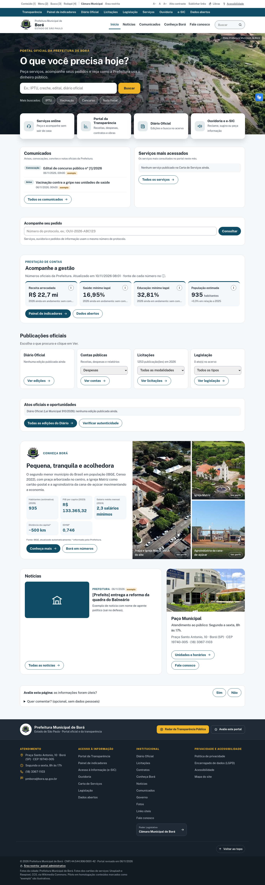

Antes: portal real (10/11/2026). Depois: prévia com cópia dos bancos e o código do branch largura-portal (nada aplicado na produção).
| página | tela | conteúdo antes | conteúdo depois | margem lateral antes → depois | rolagem horizontal |
|---|---|---|---|---|---|
| Página inicial | 1920 | 1200 px | 1320 px | 20px → 24px | não |
| Página inicial | 1366 | 1200 px | 1320 px | 20px → 24px | não |
| Página inicial | 390 | 390 px | 390 px | 20px → 24px | não |
| Notícias | 1920 | 1200 px | 1320 px | 20px → 24px | não |
| Notícias | 1366 | 1200 px | 1320 px | 20px → 24px | não |
| Notícias | 390 | 390 px | 390 px | 20px → 24px | não |
| Transparência | 1920 | 1200 px | 1320 px | 20px → 24px | não |
| Transparência | 1366 | 1200 px | 1320 px | 20px → 24px | não |
| Transparência | 390 | 390 px | 390 px | 20px → 24px | não |
| Painel de indicadores (tela inicial) | 1920 | 1200 px | 1320 px | 20px → 24px | não |
| Painel de indicadores (tela inicial) | 1366 | 1200 px | 1320 px | 20px → 24px | não |
| Painel de indicadores (tela inicial) | 390 | 390 px | 390 px | 20px → 24px | não |
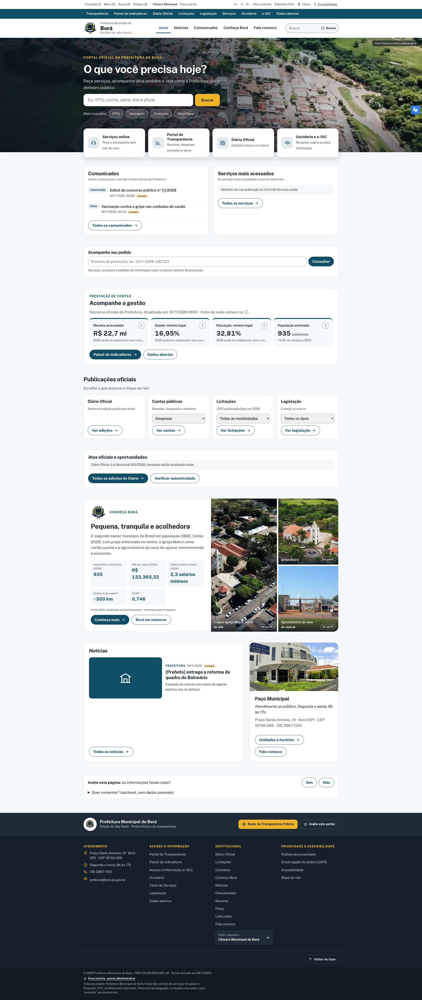
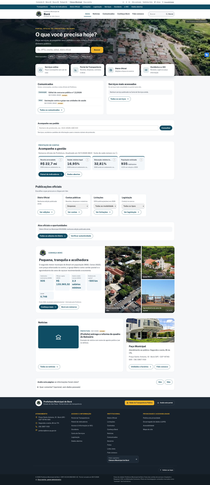

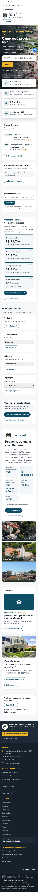
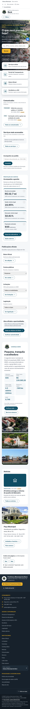
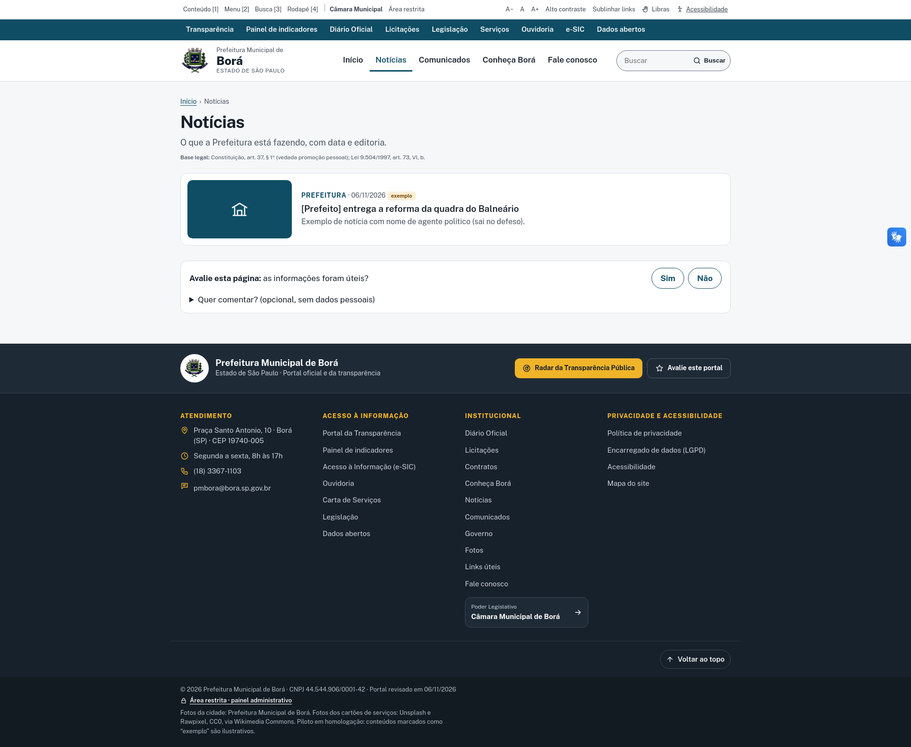
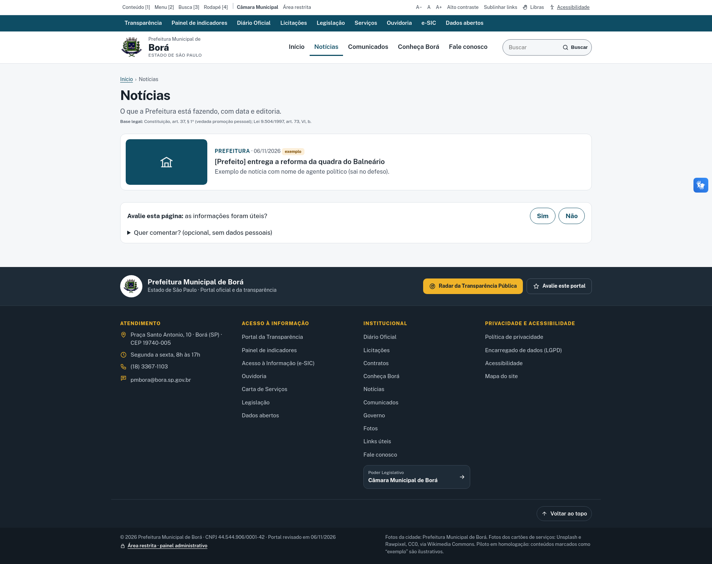
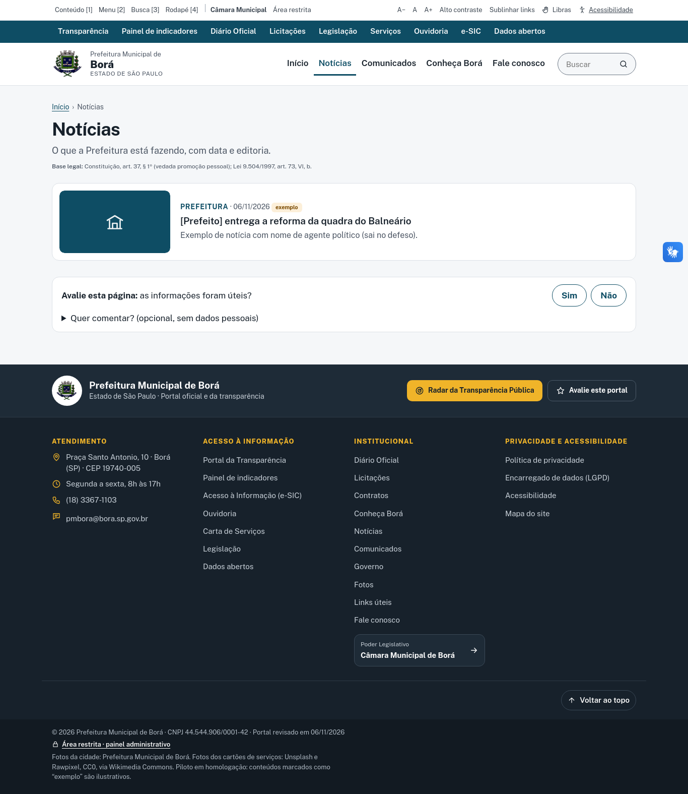

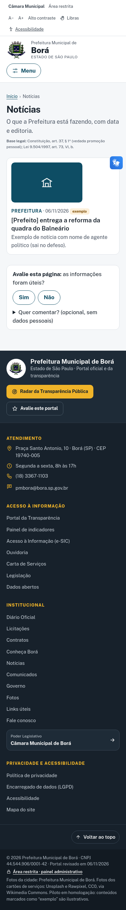
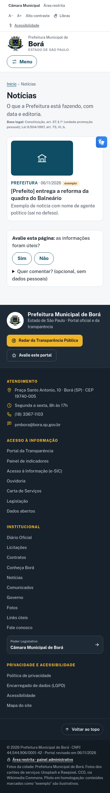
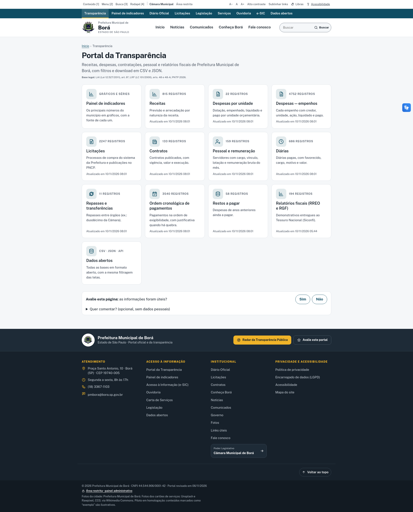

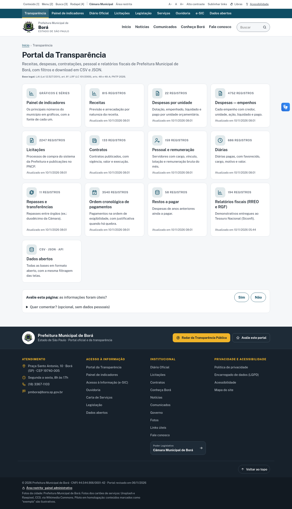

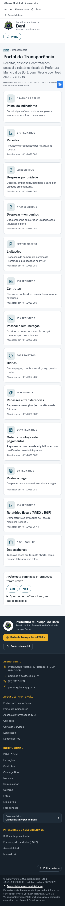

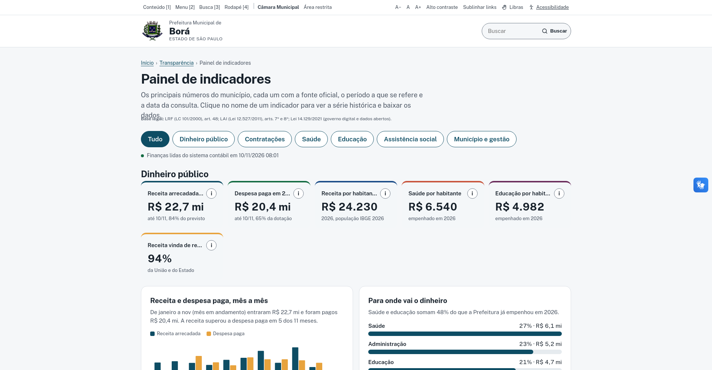
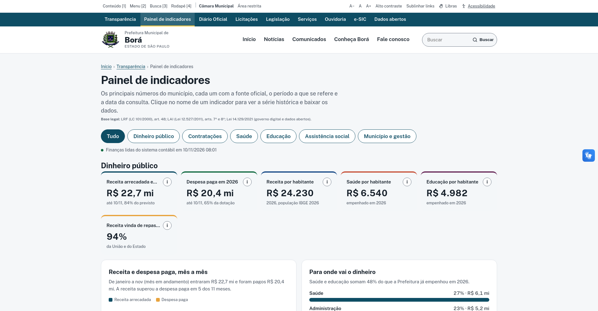
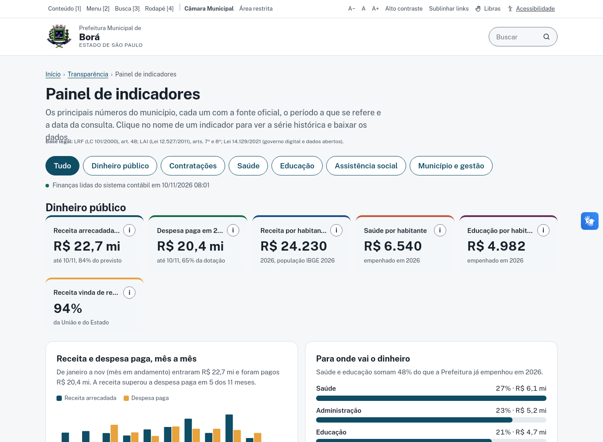
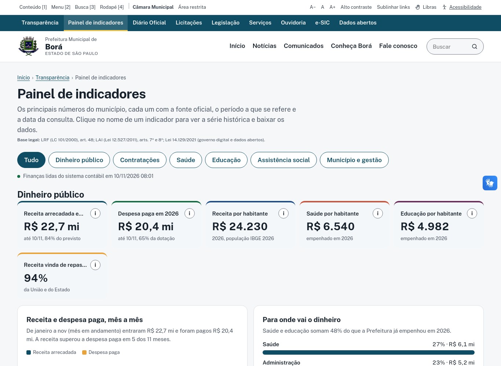
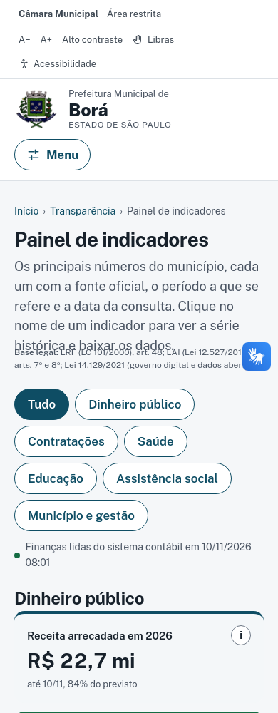
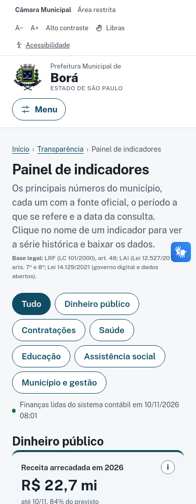